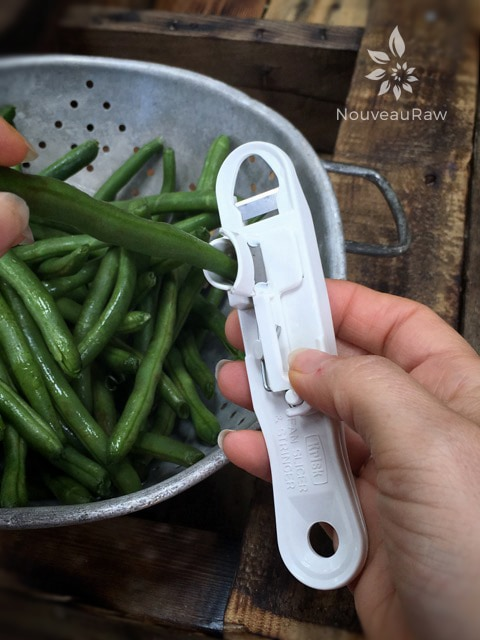
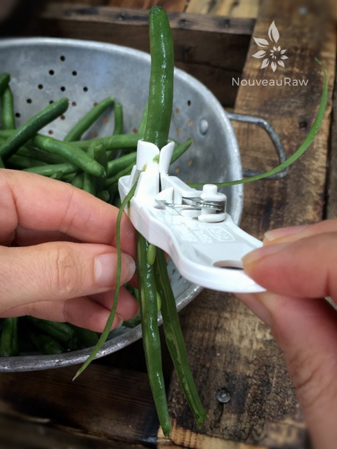

Fresh Green Bean Salad
~ raw, vegan, gluten-free, nut-free ~
Green beans may be called many different things, including French beans, fine beans, string beans, or even squeaky beans, depending on where you are eating them. Ok, I want to live where they call them squeaky beans because that is just too fun to say.
They are a rich source of proteins, carbohydrates, and dietary fibers. And contain vitamins of the B group, vitamins C and K, and minerals such as magnesium, iron, and manganese. Green beans are low in fat, but high in fiber… low in calories, but high in Vitamin A… hold on we are going on a roller coaster ride of nutrients.
Here is an interesting fact… According to the University of Minnesota, “The green beans we know today were once called string beans for the “string” that ran on the outer curve of the pod shell. Botanists, however, found a way to remove the string through breeding, and in 1894 the first successful stringless bean plant was cultivated.”
Well, enough of the scientific data. What really prompted this recipe is the fact that my parent’s garden was blessed with an abundance of green beans and they ran out of ideas as to what to do with all of them, so they shared them with me. :) For several days my mom kept bringing more and more beans over. So I decided that I better get pretty serious as to just what the heck I was going to do with all of them. Oh, the first world problems that one must face. hehe
When enjoying raw foods, I have quickly learned that the quality of the ingredients you use makes all the difference. To get the best flavor from raw green beans, you will want to them be tender, long, stiff, but flexible and give a snap sound when broken. Avoid limp or over matured beans with tough skin. To store, place them in a perforated plastic bag and keep in the refrigerator set at high relative humidity. They keep well for up to a week.
And remember, green beans don’t have to be green. The inside bean is always green but the pods (which are kidney-shaped, are edible), can be yellow, green, purple, or red in color. Imagine how beautiful this recipe would be with all those colors! I hope you enjoy this recipe. Blessings, amie sue
Ingredients:
- 1 pound green beans
- 1/4 cup sesame oil
- 2 Tbsp coconut aminos
- 1/4 tsp chili flakes
- 1 tsp maple syrup
- 1 tsp white and black sesame seeds
Preparation:
- Wash the raw beans in cold water. Just before using, remove the strings and trim the ends. Place in a large bowl.
- I use a string bean slicer, which you can find (here).
- Add the oil, coconut aminos, chili flakes, sweetener, and sesame seeds. With your hands, gently massage all the ingredients together until beans are well coated.
- One time when I made this I used part regular and part toasted sesame oil, and it was spot-on delicious!
- Allow to marinate for a couple of hours. The longer, the better.
- Store in fridge in a sealed container. Not sure how many days it will last, besides I don’t think it will last long enough to find out. :)
- If you wish to warm or even wilt the green beans for a more cooked appearance, place the completed recipe in the dehydrator set at 145 degrees (F) for 1 hour or less.
Culinary Explanations:
- Why do I start the dehydrator at 145 degrees (F)? Click (here) to learn the reason behind this.
- When working with fresh ingredients, it is important to taste test as you build a recipe. Learn why (here).
- Don’t own a dehydrator? Learn how to use your oven (here). I do however truly believe that it is a worthwhile investment. Click (here) to learn what I use.

This is the green bean splitting machine that I used to cut one bean into four. This helps with softening them as well. You poke the bean into the hole…

and pull through from the other end. Love this thing.
© AmieSue.com